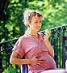

О качестве и количестве |
|||||||||||||||||||||||||||||||||||||||||||||||||||||||||||
|---|---|---|---|---|---|---|---|---|---|---|---|---|---|---|---|---|---|---|---|---|---|---|---|---|---|---|---|---|---|---|---|---|---|---|---|---|---|---|---|---|---|---|---|---|---|---|---|---|---|---|---|---|---|---|---|---|---|---|---|
|
Но это еще не все; в дополнение к тому, что вы едите каждый день, обязательно принимайте поливитаминоминеральные комплексы в количестве, удовлетворяющем потребность в 1 суточной дозе всех витаминов. Эту дозу и сам препарат порекомендует вам ваш врач. Начинайте день с полноценного завтрака (молочное блюдо, немного хлеба из цельного зерна или мюсли и свежий фрукт), затем устройте себе настоящий обед (если вы не можете себе это позволить, съешьте сандвич со свежими овощами и фруктами или салат, заправленный соевым или кукурузным маслом, йогурт и какой-нибудь фрукт) и легкий ужин (четвертый прием пищи должен быть диетическим: молочное блюдо, какой-нибудь фрукт, немного черного хлеба или несладкого печенья). Между завтраком и обедом и во время полдника можно слегка перекусить фруктами, нежирным бутербродом, йогуртом и выпить сок. О сдобных и слоеных булочках, пицце, колбасе, сосисках, жирных и жареных продуктах лучше пока забыть.
Будущие мамы часто интересуются, на что, собственно, «уходят» те самые килограммы, которые они набирают за время беременности, «достается» ли что-нибудь малышу?
* Из этих 12 кг. На долю жировой ткани обычно приходится 2-4 кг.
Белки - это основной строительный материал для организма будущего малыша, причем самыми полезными считаются белки животного происхождения. Поэтому каждый день вам нужно съедать около 150 г нежирного мяса (говядины, свинины, баранины, печени), или рыбы, или птицы (без кожи), или два яйца. Углеводы – настоящее горючее для работы мышц и внутренних органов. Чаще всего они попадают к нам в организм в форме сложных сахаров, которые входят в состав макарон, риса, хлеба, картофеля, сухофруктов. Жиры нужны организму мамы для того, чтобы усваивать жирорастворимые витамины А, D, Е, К; кроме того, они участвуют в развитии мозга, нервной системы и всех клеток эмбриона. Источники их поступления неплохо было бы варьировать; например, овощной салат вы можете заправлять то кукурузным, то подсолнечным маслом. И не забывайте иногда положить немного сливочного масла на овощи, мясо и рыбу. Можно включить в свой рацион и жирные сорта рыбы (макрель, сардины, сельдь, палтус, скумбрию). А вот продуктами, жаренными во фритюре, увлекаться не стоит, равно как и скрытыми жирами, которые есть в сдобных булочках, колбасах и мясных фаршах. Кальций. Он необходим организму малыша для формирования костей и зубов, поэтому потребность в нем во время беременности возрастает до 1200 мг в день. Кальций можно получить из молочных продуктов: молока, творога, йогуртов, сыра. Если вы не любите их, включайте эта продукты в различные блюда: в овощное пюре, супы, запеканки. 300 мг кальция - это: Витамин D помогает кальцию усваиваться. В небольшом количестве он содержится в жирных сортах рыбы, яйцах или цельных молочных продуктах. Но основная его часть вырабатывается в коже под действием солнечных лучей. Железо. Этот элемент очень важен для будущей мамы и ее малыша, поэтому обратите на него особое внимание. Его источники - мясопродукты из цельной говядины, печень и специальные препараты. Как показывают научные исследования, у 20% женщин в начале беременности нет никаких запасов железа. Фолиевая кислота (витамин В9) необходима для формирования клеток организма малыша, к тому же она помогает предотвратить серьезные пороки в его развитии. Во время беременности потребность в фолиевой кислоте возрастает вдвое и составляет 400 мкг за сутки. Чтобы пополнить организм этим витамином, нужно есть овощи с зелеными листьями (салаты, шпинат, петрушку, кресс-салат) в сыром виде и принимать специальные поливитаминные препараты (их пропишет вам ваш врач).
Соблюдая простые правила гигиены, вы защитите себя от пищевых отравлений. Помимо общих советов хранить продукты в холодильнике, не есть плохо прожаренную или недоваренную пищу, сырые яйца, продукты с просроченным сроком годности, есть еще несколько важных и не слишком очевидных рекомендаций.
Во время беременности нужно самым серьезным образом отнестись к своему питанию. Организм матери является для ребенка единственным источником питательных веществ, витаминов и микроэлементов. Нужно хорошо представлять себе, что даже самое сбалансированное питание не в состоянии обеспечить возрастающие потребности беременной женщины в необходимом количестве витаминов, поскольку их потери при хранении и тепловой обработке продуктов составляют от 30 до 90 %. Именно поэтому гинекологи всех развитых стран рекомендуют женщинам принимать витаминно-минеральные комплексы как во время планирования беременности, так и при ее наступлении. Клинически доказано, что современный витаминно-минеральный комплекс должен содержать железо, комплекс антиоксидантов, фолиевую кислоту, йод. Время ожидания малыша для будущей мамы – одновременно радостное и непростое. В организме женщины происходят такие значительные перестройки – функциональные, гормональные, обменные, - какие, пожалуй, больше не возникнут ни в один другой период жизни. Очень важно сейчас сохранить физическое здоровье и хорошее эмоциональное состояние, ведь в конечном итоге это повлияет на то, каким родится малыш. Некоторые отрицательные моменты в самочувствии будущей мамы легко устранить с помощью правильно организованного рациона.
 Чтобы определить, какое количество килограммов нужно набрать будущей маме, необходимо знать ее вес до беременности. Например, полным женщинам стоит «взять на себя» поменьше (около 7-8 кг), чем худым (примерно 12-16 кг). Худощавым женщинам нужны специальные «мерки», потому что обычно они едят немного. Вы спросите, почему эти килограммы имеют такое значение? Худощавая или слишком худая женщина рискует родить слабого ребенка, если не наберет достаточно веса. Худым женщинам врачи рекомендуют есть побольше, чем обычно. Им позволяется перекусывать между приемами пищи, есть сладкое и забыть об обезжиренных продуктах. Будущая мама нормальною телосложения находится в самом лучшем положении. Ей достаточно лишь немного скорректировать свое питание, и она наберет то количество килограммов, что необходимо ей и ее малышу. Правда, если она их не наберет, то рискует оказаться в той же ситуации, что и худая женщина, а если переберет - в той же что и полная. Надо признать, что малышу полной или очень полной женщины повезло, ведь он не будет ни в чем нуждаться. А вот его маме придется нелегко: врач будет строго следить за тем, чтобы она не набрала лишних килограммов. У маленьких женщин (ростом меньше 1,57 м) все те риски, о которых упоминалось выше, выражены в большей степени, поэтому им стоит набирать вес очень осторожно.
По мнению американских исследователей, чтобы малыш родился здоровым, набирать вес нужно в нужное время. Первый триместр И прибавка в весе, и его потеря в этот период считаются явлениями нормальными. В среднем будущие мамы набирают от 1,5 до 2.5 кг в зависимости от исходного веса. Второй триместр На этом этапе женщинам нужно быть внимательными. Если вы набираете нужное количество килограммов, все в порядке. Если недобираете, есть риск, что малыш родится с маленьким весом. Средние показатели для этого периода распределяются так: 450 г в неделю для нормальной женщины, 500 г для худой и не больше 300 г для полной. Третий триместр С каждой неделей будущие мамы прибавляют в весе все меньше, и эту тенденцию важно не нарушать, ведь организм женщины готовится к рождению малыша. Роль консультанта по вопросам питания будущей мамы обычно выполняет акушер-гинеколог, ведущий беременность, а не диетолог, как нам всем хотелось бы. | |||||||||||||||||||||||||||||||||||||||||||||||||||||||||||
<На главную> <Назад> |
|||||||||||||||||||||||||||||||||||||||||||||||||||||||||||